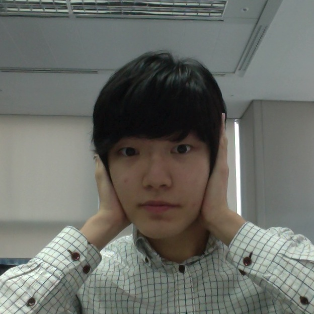

개발자 꿈을 향해가는 '20대' 를 위한
제2회 소마인사이드 세미나
개발자 꿈을 향해가는 '20대'를 위한 우리의 얘기를 나누어 보고 싶었습니다.
왜 개발자가 되고 싶은지 명확하게 알 수 없지만 단지 좋아서 택했던 이 길에서, 경험과 지식들을 나누고자 합니다.
- 참가등록 기간 : 2013년 03월 02일 ~ (참가신청)
- 일정 : 2013년 3월 23일 12:30 ~ 18:00
- 본 세미나는 유료(5,000원)로, 사전 등록 및 입금이 확인되어야 참여할 수 있습니다.
- 입금 후 환불은 불가합니다. 또한 신청자 이름과 무통장입금시 입금자의 이름이 반드시 같아야 등록 확인이 가능합니다.
- 주차 지원이 되지 않습니다. 대중교통을 이용해주시기 바랍니다.
- 세금계산서, 영수증 발급이 되지 않습니다.
Schedule
| # | 시간 | 발표내용 | 발표자 | 발표자료 |
|---|---|---|---|---|
| 등록 | 12:00 ~ 12:50 | |||
| 안내 | 12:50 ~ 13:00 | 소마인사이드 2회를 시작하며 | ||
| 세션1 | 13:00 ~ 13:50 | 하루 안에 페이스북 웹 앱 만들기 | 이용희 | |
| 세션2 | 14:00 ~ 14:50 | 아키텍트가 알아야 할 12/97 | 손영수 | |
| 세션3 | 15:00 ~ 15:50 | 스타트업 홍보의 이론과 실제 | 윤태섭 | |
| 세션4 | 16:00 ~ 16:50 | 대학시절의 커리어 패스 - 내가 다시 대학생이 된다면 | 이재근 | |
| 세션5 | 16:00 ~ 17:50 | Joyfl 창업이야기.ssul | 전수열 | |
| 마무리 | 17:50 ~ 18:10 | 마무리 및 경품추첨 |
Sessions
하루 안에 페이스북 웹 앱 만들기
현대는 개발자 전성시대입니다. 우리 주변의 많은 것들이 빠른 속도로 IT와 접목되고 있으며 이에 맞춘 다양한 플랫폼들이 생겨나고 또 사라져가고 있습니다. 앱스토어 등의 오픈마켓 시스템이 성공을 거둔 이래로 많은 플랫폼들이 한계를 탈피하는 동시에 새로운 가능성을 위해 오픈 마켓 시스템을 도입하고 있습니다. 현재 이러한 오픈 마켓은 개발자들에게 기회의 장이 됐습니다. 세계 최대의 소셜 네트워크 서비스인 페이스북도 앱을 통해 오픈 마켓처럼 개발자가 사용자에게 콘텐츠를 직접 제공할 수 있습니다. 페이스북 앱의 가장 기본적인 형태가 되는 웹앱을 만드는 과정을 통해 그 가능성의 세계에 다가설 수 있길 바랍니다.
이용희
- 아울네스트 대표이사 - http://owlnest.kr
- 페이스북 웹 앱 개발, 13.01~13.03 월간 마이크로소프트웨어 잡지 기고
- 소셜 큐레이션 서비스 개발, 12.07~12.09 월간 마이크로소프트웨어 잡지 기고
- Best of Best, 2021 Facebook Mobile Hack
- Best of Social, 2021 Facebook Mobile Hack
아키텍트가 알아야 할 12/97
소프트웨어 아키텍트가 알아야할 97가지의 내용중 12가지를 간추린 내용으로 개발자들에게 도움이 될만한 아키텍트의 생각등을 공유하는 시간을 가집니다.Vasa호 이야기, 아키텍팅이란 균형에 관한것이다. 요구사항이 명확하지 않을 때, 걸어 다니는 해골로 시작해라. 설계의 기준으로 불확실성을 사용해라. 높이 1000피트의 뷰를 가져라. 구현 가능한 것만 설계해라 가장 큰 문제는 기술이 아니다. 반복 작업과 싸워라. 드워프, 엘프, 마법사 그리고 왕. 정경유착. 고객의 고객.. 고객을 알아라. 컨설팅과 사과 이야기

손영수
- NHN NEXT 교수
- 지경부 소프트웨어 마에스트로 멘토
- AsianPLoP (아시아 소프트웨어 패턴 학회) 공동의장
- PLoP (소프트웨어 패턴학회) 인증 소프트웨어 패턴 저자 활동 및 다수의 패턴 발표
- 소프트웨어 공학 커뮤니티 EVA 10년간 운영
스타트업 홍보의 이론과 실제
IT 서비스를 '어떻게 개발하느냐'에서 함께 고민해야하는것은 '어떻게 홍보하느냐' 입니다. 많은 스타트업이 잘 만들어진 제품을 '한정된 자원에서 효율적으로 홍보하는 법'을 고민합니다. 서비스 홍보는 기업별로 case by case이며, 기업의 노하우를 외부의 공개하기 어려운 부분이기 때문에 홍보이론을 해당 기업에 적용하기 어렵습니다. 홍보의 중요성을 인식하고 전략적 홍보방안을 세우기위한 이론과 경험 사례를 공유합니다.
윤태섭
- (주) 섹시다이나마이트 섹시
- 숭실대학교 미디어학부 석사재학중
- 소프트웨어 마에스트로 2기
대학시절의 커리어 패스 - 내가 다시 대학생이 된다면
너무 늦게 알아버려 제가 도전하지 못했던 다양한 일들이 있어서 대학시절로 돌아간다면 해보고 싶은 것들에 대한 이야기, 또한 졸업을 앞둔 대학생들의 고민인 취업, 창업, 진학에 대한 이야기, 그리고 이런 것들과 더불어 제가 졸업할때까지 경험했던 것들과 함께 이야기 하는 자유로운 주제가 될 것 같습니다.
이재근
- 소프트웨어 마에스트로 1기 최종 10인 선정
- NHN 멤버십 2기
- LGT, iHub등 다수 공모전 수상
Joyfl 창업이야기.ssul
개발자 출신의 기업가가 개발자들로만 구성된 스타트업 Joyfl을 준비하며 겪은 썰을 풀어봅니다. 팀이 어떻게 모이게 되었는지, 어떻게 팀을 이끌어나가는지에 대해 이야기합니다. 또한 Dish by.me라는 소셜네트워크서비스를 개발하며 얻은 여러가지 아이폰 개발 노하우와 팁을 공유합니다.
전수열
- Joyfl 대표이사 (http://joyfl.net)
- Smarteen AppClub 2기 회장
- Sexy iOS Developers Korea 운영
- Flash Platform Developers 운영
Location

클릭하면 네이버 지도로 이동합니다! ;)
선릉 아남타워 7층 - SW Maestro 연수센터
- 지하철 2호선 선릉 : 5번 출구로 나와서 역삼역 방향으로 약 400미터(도보 5분)
Organizers
- 진성주 - 호기심왕성하고 신기한거 만들어보는거 좋아하는 개발자, @geekbeast
- 이동훈 - SW Maestro 1기 기장
- 이연복 - 헬로월드 개발팀장
- 문준석 - funmeate 대표
- 임선용 - 텔레톡비 CTO
- 천은진 - 삼성전자
- 김종헌 - Team Appetizer 대표
- 임연준 - NS Linkle CTO, 귀찮다고 느끼는 모든 것을 개발해 보려는 귀차니즘 개발자
- 안기욱 - 뭐든 망가뜨리는 개발자, Facebook
- 김선유 - 연세대학교 컴퓨터과학과 대학원 소프트컴퓨팅랩
Sponsors


Communications
여러분의 다양한 생각들을 나누어보세요! ;)
Copyright SOMAINSIDE all right reserved 2013.
Built With Bootstrap, Darkstrap Inspired by KSUG seminar site | switch color